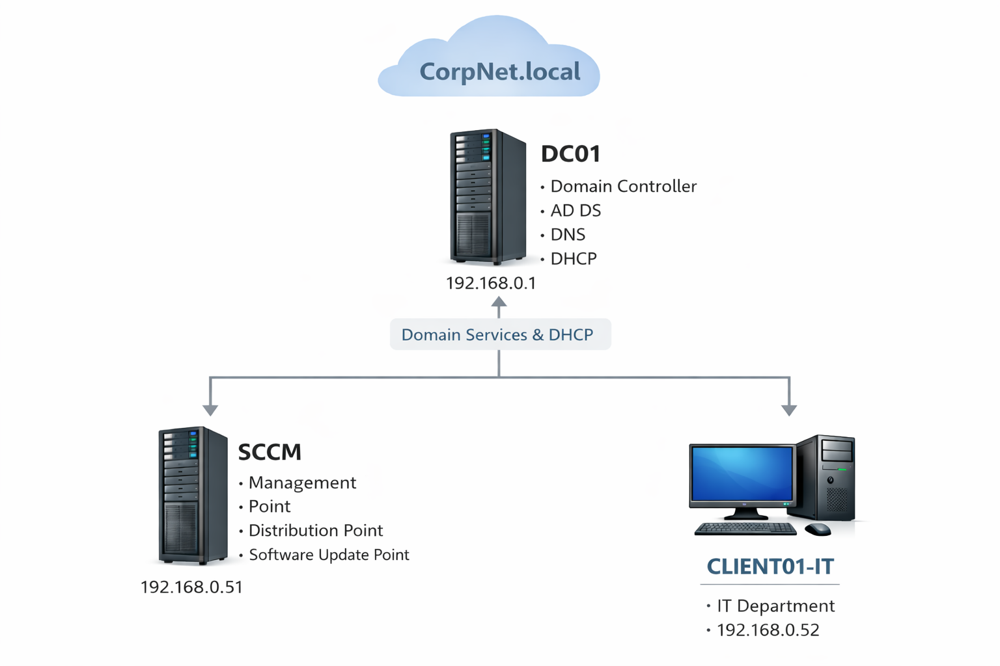

MECM Home Lab — Endpoint Management & Patch Infrastructure
End-to-end build in VirtualBox: AD DS/DNS/DHCP, SQL Server, WSUS, and MECM site roles.
Validated patching by achieving a successful SUP synchronization and confirming updates begin populating in the MECM console.
MECM
WSUS / SUP
SQL Server
Active Directory
Troubleshooting
Domaincorpnet.local
Site ServerSCCM (Primary Site)
Site CodeHQC
ValidationWSyncMgr.log = Sync succeeded
Architecture
- DC01 — AD DS / DNS / DHCP — 192.168.0.1
- SCCM — MECM + SQL + WSUS/SUP — 192.168.0.51
- CLIENT01-IT — Domain-joined client — 192.168.0.52
Diagram

Screenshot slot: architecture diagram (already wired)
Build Steps (High-Level)
- Built domain services on DC01 (AD DS, DNS, DHCP) and established naming + IP plan.
- Joined SCCM server to the domain and installed SQL Server with MECM-compatible settings.
- Installed MECM Current Branch Primary Site and core roles (MP/DP).
- Installed WSUS and configured Software Update Point integration.
- Validated synchronization end-to-end and confirmed the update catalog begins populating.
Screenshot slots: AD OU tree, SQL instance/collation, MECM console, role status
SUP / WSUS Sync Proof
Primary validation: Software Update Point synchronization completed successfully.
This confirms WSUS connectivity, SUP configuration, and the update synchronization pipeline.
- Log reviewed:
WSyncMgr.log → Sync succeeded
- Configuration confirmed:
WCM.log → WSUS config success
Screenshot slot: WSyncMgr.log showing “Sync succeeded”
Screenshot slot: WCM.log showing default SUP + WSUS_CONFIG_SUCCESS
Troubleshooting Summary
Issue: SUP present but no default SUP / WSUS update source not detected.
Approach: Used MECM logs to isolate configuration state vs WSUS functionality.
- Verified WSUS accessibility and content directory readiness.
- Forced site components to reload configuration by restarting MECM services:
SMS_EXECUTIVE and SMS_SITE_COMPONENT_MANAGER.
- Re-validated via
WCM.log and WSyncMgr.log.
Screenshot slot: the original error + the final success log lines
Next Improvements
- Create collections by department (IT) and validate client push installation.
- Create a Software Update Group (SUG) and deploy to CLIENT01-IT.
- Add 1–2 application deployments (7-Zip / Notepad++).
- Optional: PXE/OSD task sequence for full imaging workflow.